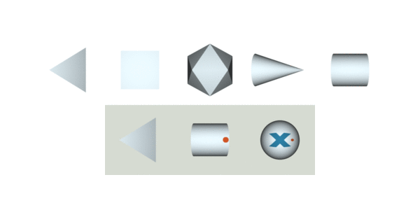

Implicit-PDF: Non-Parametric Representation of Probability Distributions on the Rotation Manifold
| Kieran Murphy* | Carlos Esteves* | Varun Jampani | Srikumar Ramalingam | Ameesh Makadia |
| Google Research |
| Paper | Code | Dataset |
|
Implicit-PDF We introduce a method to predict arbitrary, non-parametric probability distributions over the rotation manifold. This is particularly useful for pose estimation of symmetric and nearly symmetric objects, since the distributions can include both uncertainty on the estimation and capture the symmetries of the object. In the display above, we visualize the full space of rotations by projecting onto the surface of a sphere (displayed in 2D via Mollweide projection) and using color to indicate the "tilt" direction. The predicted distribution, output by an Implicit-PDF model, is displayed as markers whose size is proportional to their probability. |
Abstract
Single image pose estimation is a fundamental problem in many vision and robotics tasks, and existing deep learning approaches suffer by not completely modeling and handling: i) uncertainty about the predictions, and ii) symmetric objects, where multiple (potentially infinite) poses may be correct. To this end, we introduce a method to estimate arbitrary, non-parametric distributions on SO(3). Our key idea is to represent the distributions implicitly, with a neural network that estimates the probability density given the input image and a candidate pose. Grid sampling or gradient ascent can be used to find the most likely pose, but it is also possible to evaluate the density at any pose, enabling reasoning about symmetries and uncertainty. This is the most general way of representing distributions on manifolds, and to demonstrate its expressive power we introduce a new dataset of challenging symmetric and nearly-symmetric objects. Our method requires no supervision on pose uncertainty – the model trains only with a single pose per example. Nonetheless, we find our implicit model is able to accurately predict complex distributions over 3D pose. In addition to its expressiveness, our model is also an accurate pose estimator in non-ambiguous environments, reaching state-of-the-art performance on many categories of pose estimation benchmarks like Pascal3D+ and ModelNet10-SO(3).Paper
|
Implicit-PDF: Non-Parametric Representation of Probability Distributions on the Rotation Manifold Kieran Murphy*, Carlos Esteves*, Varun Jampani, Srikumar Ramalingam, Ameesh Makadia ICML 2021. [arXiv] [ICML] |
Code
 |
Code is now available on github! |
Symmetric Solids Dataset
| Now live on Tensorflow Datasets! |
|  |
Bibtex
@inproceedings{implicitpdf2021,
title = {Implicit Representation of Probability Distributions on the Rotation Manifold},
author = {Murphy, Kieran and Esteves, Carlos and Jampani, Varun and Ramalingam, Srikumar and Makadia, Ameesh},
booktitle = {International Conference on Machine Learning},
year = {2021}
}